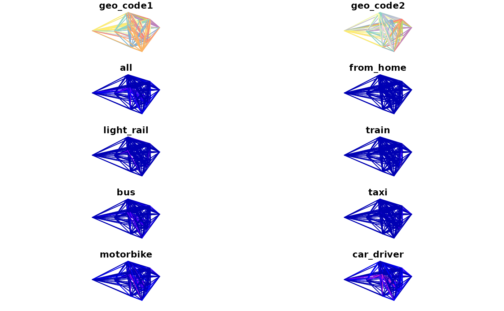

This function generates "desire lines" from census 2011 data.
By default gets all desire lines from census in region, but
can get the top n.
get_desire_lines(region = NULL, n = NULL, omit_intrazonal = FALSE)
Arguments
| region |
The PCT region or local authority to download data from (e.g. west-yorkshire or Leeds).
See View(pct_regions_lookup) for a full list of possible region names. |
| n |
top n number of destinations with most trips in the 2011 census
within the region. |
| omit_intrazonal |
should intrazonal OD pairs be omited from result?
FALSE by default. |
Examples
desire_lines = get_desire_lines("wight")
#> Parsed with column specification:
#> cols(
#> `Area of residence` = col_character(),
#> `Area of workplace` = col_character(),
#> `All categories: Method of travel to work` = col_double(),
#> `Work mainly at or from home` = col_double(),
#> `Underground, metro, light rail, tram` = col_double(),
#> Train = col_double(),
#> `Bus, minibus or coach` = col_double(),
#> Taxi = col_double(),
#> `Motorcycle, scooter or moped` = col_double(),
#> `Driving a car or van` = col_double(),
#> `Passenger in a car or van` = col_double(),
#> Bicycle = col_double(),
#> `On foot` = col_double(),
#> `Other method of travel to work` = col_double()
#> )
#> Parsed with column specification:
#> cols(
#> X = col_double(),
#> Y = col_double(),
#> objectid = col_double(),
#> msoa11cd = col_character(),
#> msoa11nm = col_character()
#> )
#> Parsed with column specification:
#> cols(
#> X = col_double(),
#> Y = col_double(),
#> objectid = col_double(),
#> msoa11cd = col_character(),
#> msoa11nm = col_character()
#> )
#> Error in if (xsize * ysize * n > prod(total_size)) { ysize = total_size[2]/nrow xsize = ysize/asp}: missing value where TRUE/FALSE needed
#> Warning: plotting the first 10 out of 18 attributes; use max.plot = 18 to plot all
